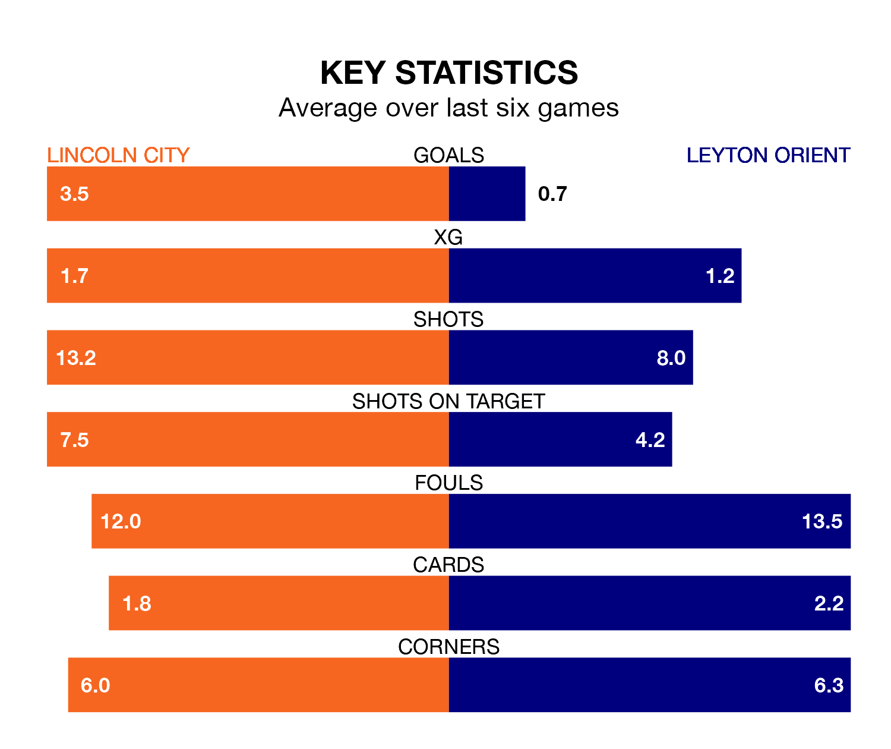

Lincoln City are on an excellent run ahead of hosting Leyton Orient at the LNER Stadium on Friday, with 16 points collected from their last six games.
The Imps have picked up five wins and one draw in their last six EFL League One games, and face an Orient side whose last six games have brought three wins and one draw.
With Lukas Jensen between the sticks, Lincoln can rely on one of the league's safest pair of hands. He has kept 17 clean sheets in his 39 appearances this season, and only one other 'keeper – Portsmouth's Will Norris – has been able to prevent the opposition scoring on more occasions in EFL League One.
In Orient's net, Samuel Howes has one clean sheet in three games. He has conceded a goal every 45 minutes, nearly three times as often as the 117 minutes between goals for Jensen.
With 44 goals in 39 games so far this season, the visitors are scoring at below the league average rate with 1.1 goals per game. But they are conceding fewer than average too, letting in 44 goals at a rate of 1.1 per game.
City, meanwhile, are above average scorers, with 1.4 goals per game, compared to a league average of 1.3. They have conceded 0.8 goals per game.
The Imps are eighth in the table after 39 games, of which they have won 16 and drawn 13, earning 61 points.
Orient are three places behind the home team in 11th, with 16 wins and 10 draws putting them on 58 points.
Lincoln's last match was on March 16, a 5-0 win against Bristol Rovers, with Joseph Taylor (three), Paudie O'Connor and Recco Hackett-Fairchild getting the goals for the Imps.
Orient beat Stevenage 1-0 last time out, also on March 16, with Max Harrison Sanders on the scoresheet.
Updated: 12:16 (UTC), 25/03/24